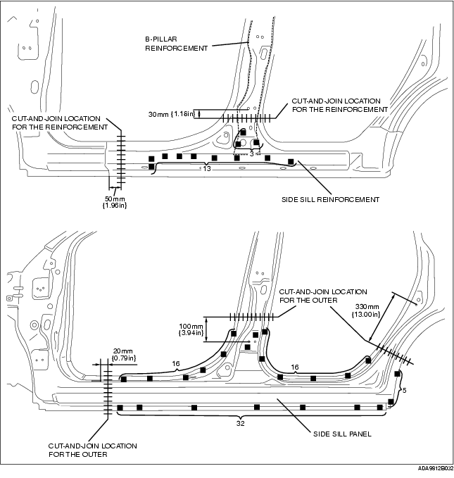

Side sill panel installation
1. When joining the new and old parts, temporarily install and fit the new part in position, measure each dimension according to the body dimension, then adjust the position to align it to the standard dimensions.
- • When cutting and joining the reinforcement, make sure not to damage or scratch the B-pillar reinforcement.
2. Drill holes for plug welds before installing new parts.
3. After trial-fitting new parts, make sure the related parts fit properly.
